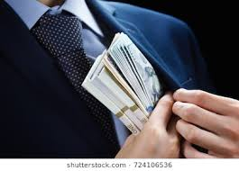

Chogm 2007
This came to public attention last year (2011). Several ministers, including former Vice-President, Gilbert Bukenya, Prime Minister Amama Mbabazi and former state minister for works and transport, John Byabagambi, were implicated in the mismanagement of billions of public funds meant for the 2007 CHOGM summit. Others implicated were ministers John Nasasira, Mwesigwa Rukutana and Isaac Musumba. Although Parliament allocated sh270b to the summit, the Auditor General discovered that more than sh370b was spent. The figures went up to sh500b after parliamentary accounts committee grilled those who spent the funds. The probe, commissioned by President Yoweri Museveni, found out that money was lost in irregular procurement of the CHOGM cars, road construction and repairs, and the renovation of Entebbe Airport, among other ventures. Several permanent secretaries interrogated claimed they had acted on orders from former Vice-President Gilbert Bukenya, who was the chairman of the Cabinet sub-committee on CHOGM. Prof. Bukenya was accused of influence-peddling in the sh19b CHOGM car deal, but later court acquitted him.